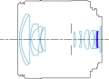

器材库 > APS画幅镜头 > EF-S 18-55/4-5.6 IS STM

详细规格
镜头类型
标准变焦镜头
发布日期
2017-02-15
焦距
18mm-55mm
等效35mm画幅焦距
29mm-88mm
最大光圈
f/4-5.6
最小光圈
f/22-32
镜头结构
12片/10组
非球面镜片
1片
光圈叶片
7片
最近对焦距离
25cm
最大放大倍率
0.25倍
驱动马达
STM
滤镜口径
58mm
镜头卡口
Canon EF
防抖
是
颜色
黑色
尺寸
66.5×61.8mm
重量
215g
该产品暂无存档的网友点评
产品图 / 样片
EF-S 18-55/4-5.6 IS STM
EF-S 18-55/4-5.6 IS STM